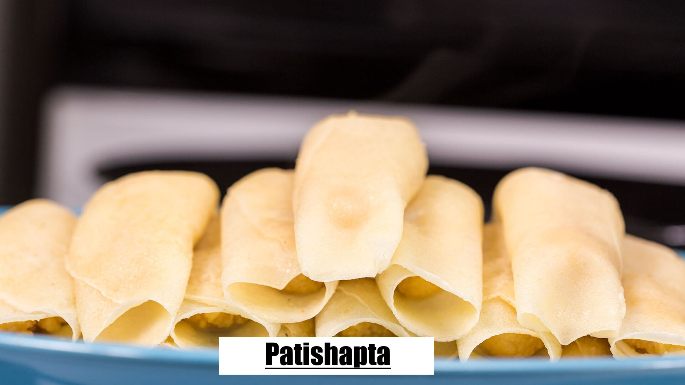
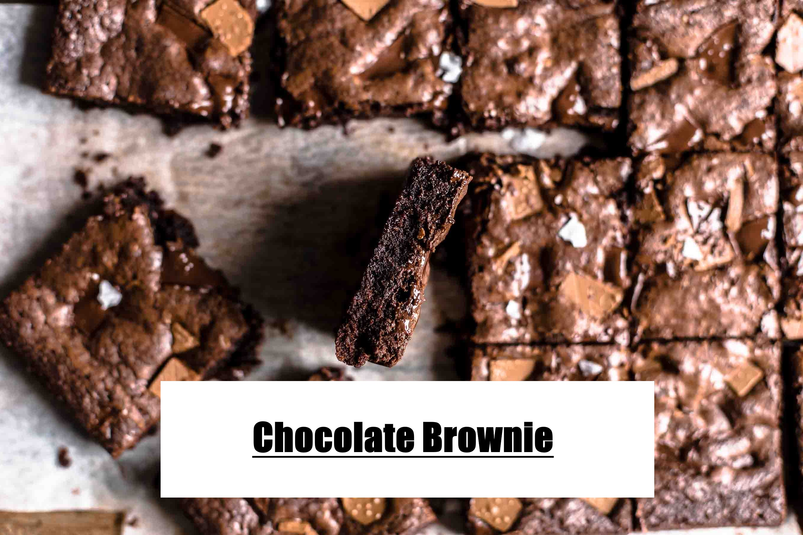
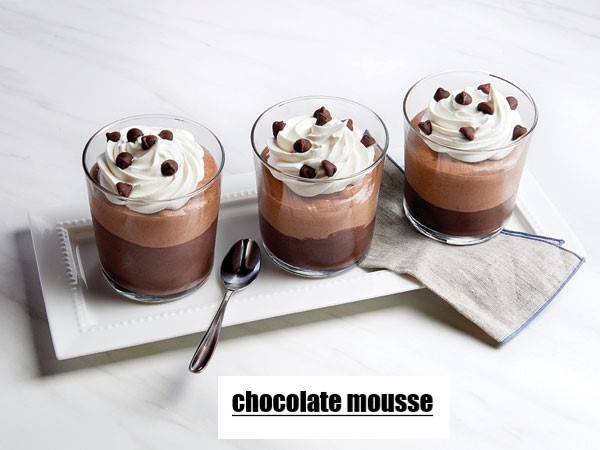
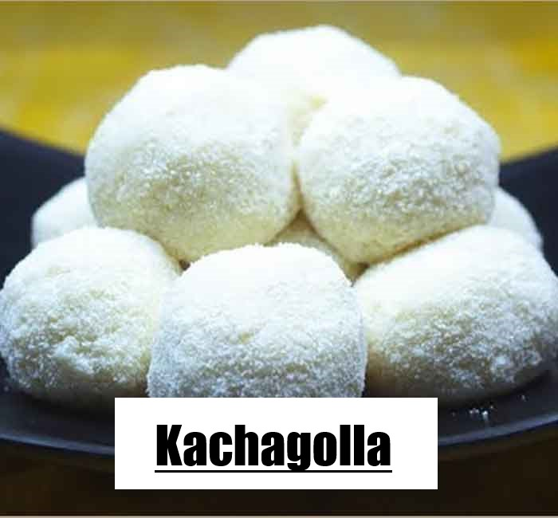

×
Info! Recipe details are directly from our kitchen or from our Moms' recipe notes.
Cooking videos provided here are from internet. That's why, they can vary a little bit.
We apologize! You can try any of them or customize your dish in your own way. Good luck!!

About
Bhapa pitha is a type of rice cake mainly from the eastern part of the Indian subcontinent, what is today Bangladesh, East India and Northeast India. Bhapa pitha is considered to be traditional winter dish in Bangladesh. These are steamed rice cakes made out of freshly ground rice flour. The filling is composed of coconut and date molasses. Either brown sugar or jaggery can often be used as a substitute for the molasses. It is believed to be originated in the region of ancient Kamrup i.e. today's Assam and then was spread to its nearby regions. In Assam it is known as ketli/tekeli pitha and is generally made on special occasions like Bihu with a specific rice known as "Bora Sual".Ingredients
For Vapa Pitha(Steamed Rice Sweet)
- 1 cup parboiled rice
- 2 tablespoon store-bought rice flour
- a pinch of salt
- 1/2 cup water
- 1 fresh coconut
- jaggery (prefer khejur gur, molasses from silver date palm).
Direction
Processing
Related Video
Step 2:Take two pieces of clean cotton cloth and two small bowls. then add the coconut and jaggery. Cover it with another layer of flour. Don’t press too much or else, it will break down while placing it for steaming. Cover it with a piece of cloth and put it in the steamer. Tap the bowl slightly, so that you can remove the bowl easily. Remove the bowl and cover the pitha with the remaining ends of the cloth.
Step 3:Then steam for 4/5 minutes. Prepare the same way using the other bowl and cloth. You have to remove one pitha and place another. After a while, you may serve the hot delicious vapa pitha. Of course, you have to serve the pitha in the hot condition. Only then vapa pitha is very tasty.

About
A Sweet dish submerged in milk!Ingredients
For DUDH PULI PITHA (COCONUT STUFFED DUMPLING IN SPICE INFUSED MILK)
- 2 cups desiccated coconut, unsweetened
- 1 cup milk
- jaggery
- 2 cups Rice flour
- 1 cup water
- 1/8 teaspoon salt
- milk
- 4 cups milk
- 1 cup sugar
- 3-4 small cardamom
Direction
Processing
Related Video
The mixture will be semi sticky but not runny.
Turn on stove and stir constantly until the mixture becomes slightly sticky.
Steps to make dumplings: Boil water.
Add salt.
Turn off stove and add rice flour to boiling water to form a firm but soft and not sticky dough.
The dough should bounce back if you press with a finger. Adjust flour accordingly.
Knead well for about 5 minutes.
Take part of the dough and roll it out as thick as a tortilla.
Cut out circles with a cookie cutter.
Place a small amount of coconut filling on each circle.
Brush the edges of with water and seal tightly to form a crescent (semi-circular) shape.
Steps to cook dumplings: Boil 4 cups milk and cardamom together in a non stick pan.
Add sugar and dissolve in the boiling milk.
Add the dumplings and cook about 30-45 minute in medium-low heat or until dumplings are cooked.

About
A bengali style pancake!Ingredients
For Chitoi(Bangladeshi Style Rice Pancake)
- Atop chal/Polau chal - 2 cups
- Lukewarm water - as required
- Salt - as required
Direction
Processing
Related Video
2. After two hours drain all water.
3. Pour the soaked rice into blender, along with salt and warm water as required.
4. Blend then until smooth paste.
5. Keep the batter into refrigerator for at least two hours, preferable to over night.
Step 2:1. Heat a chitoi pithe mold or cast iron wok on high heat.
2. Reduced heat to medium.
3. Pour 1/4 cup batter and cover it for 2-3 minutes.
4. Remove gently the edges of pitha, then remove fully from wok.
Step 3: Repeat the same process to make all pitha. Serve hot with coriander chutney or meat.

About
A round shaped bengali sweet!Ingredients
For Narkel Naru(Coconut & Jaggery Sweet Balls)
- 2 cups fresh grated coconut
- 1 cup organic jaggery powder or organic grated jaggery
- some ghee for greasing palms, you can also use coconut oil
Direction
Processing
Related Video
Step 2:Then add 1 cup jaggery powder or grated jaggery. Mix it very well with the coconut. Stirring non-stop cook the coconut and jaggery mixture for about 6 to 7 minutes.6. The jaggery will melt and mixture will slightly thicken. Do not cook too much as then the ladoos can become hard. To test take a small portion and let it cool down a bit. Then try to form a tiny ladoo with it. If the mixture easily can be shaped into a tiny ball, the ladoo mixture is ready. Switch off the flame and keep the pan on the countertop.
Step 3: Mix very well and let this mixture cool down completely. Spread a bit of ghee in your palms and taking small to medium sized portions make the ladoos. instead of ghee you can also use coconut oil. Store them in an air-tight container and refrigerate. Depending on the color of jaggery, the color of ladoos will vary from light brown to dark brown. This recipe makes about 10 ladoos. Serve narkel naru recipe as a sweet.

About
A designer bengali dry sweet!Ingredients
For Kheer Sondesh(Dried Milk Sweet)
- 1 litre milk
- Sugar – 3/4 cup
- Ghee (clarified butter) ________________________________________
Direction
Processing
Related Video
Step 2:The mixture should come together to a consistency that can be molded. Let the mixture cool off completely Once cold, take about 2-3 tbsp and make a ball. Flatten the ball between the palm of your hands. Lightly press the mold on top of it and store aside. Repeat until you are done with the mixture. ________________________________________

About
Bengali Style Rolled Sweet!Ingredients
For Patishapta(A Sweet Bengali Roll)
For THE KHEER
- 1.5 kg milk
- 65 g sugar
FOR THE CRÊPE
- 1 cup flour
- 1 cup Chinigura rice flour
- 1.5 cup milk
- 1 cup water
- 1 pinch of salt
Direction
Processing
Related Video
Step 2:Take 1.5 kg milk in a heavy-bottom saucepan and set it to boil. Once bubbling, stir in 65 g sugar. Keep boiling the milk, while stirring it continuously, for about 90 minutes. During this entire time, the pot should be on medium to low heat. At regular intervals of 3–4 minutes, be sure to scrape the solids from the bottom and sides of the pot, and incorporate them into the boiling milk. This step, as well as the previous one, is crucial. We don’t want our kheer to burn at any point. Once the milk has thickened such that when you lift some of it on your spoon and drop it, it falls in clumps. Add this paste to the pot. Stir and cook for another 5 minutes. Allow the kheer to cool before proceeding to the next stage.
Step 3: Divide the kheer in equal portions of 22 g each. Give your batter a quick stir till it is uniform. Now, set a non-stick pan on medium-low flame and allow it to heat up completely. Once the pan is hot, smear it with a very, very light coating of ghee(remember, we are already using a non-stick pan). Using a ladle, take about 25 g of the batter and drop it in the centre of the pan. Swirl it around gradually to form a thin crêpe, about 12 cm in diameter. Roll a portion of the kheer between your palms to form a log (about 8 cm long), and flatten it with your fingers. Place it at one end of the crêpe and start folding the crêpe into a roll, with the help of a spatula. [Note that we are cooking only one side of the crêpe.] Transfer the patishapta from the pan to a plate and proceed making the rest. These can be eaten hot, or they can be cooled and stored in the refrigerator for up to 7 days.

About
In the United States and some parts of Canada, pudding characteristically denotes a sweet milk-based dessert similar in consistency to egg-based custards, instant custards or a mousse, often commercially set using cornstarch, gelatin or similar collagen agent such as the Jell‑O brand line of products. In Commonwealth countries these puddings are known as custards (or curds) if they are egg-thickened, as blancmange if starch-thickened, and as jelly if gelatin-based. Pudding may also refer to other dishes such as bread pudding and rice pudding, although typically these names derive from their origin as British dishes.Ingredients
For Egg pudding
- Eggs - 3
- Sugar - 10 tbsp
- Milk - 2 cup
- Vanilla essence - 1/2 tsp
- Sugar (for caramel) - 2 tsp
Direction
Processing
Related Video
Step 2: Pour this mixture into the caramelised bowl and keep in the cooker with 1/2 cup water Pressure cook this mixture for 10 minutes and remove from the cooker after the pressure subsides
Step 3: Refrigerate and serve

About
Gulab jamun (also spelled gulaab jamun) is a milk-solid-based sweet from the Indian subcontinent, and a type of mithai, popular in India, Nepal, Pakistan (where it is known as gulab jamun), the Maldives (where it is known as gulaabujaanu), and Bangladesh (where it is known as gulab jam), as well as Myanmar. It is also common in Mauritius, Fiji, the Malay Peninsula, South Africa, and the Caribbean countries of Trinidad and Tobago, (where it is called rasgulla), Guyana, and Suriname. It is made mainly from milk solids, traditionally from khoya, which is milk reduced to the consistency of a soft dough. Modern recipes call for dried or powdered milk instead of khoya. It is often garnished with dried nuts such as almonds and cashews to enhance flavour.Ingredients
For Gulab Jamun
For Sugar Syrup
- 2 cups Sugar
- 5 cups Water
- 1 tsp Milk
- 1/4 tsp Cardamom Seeds
- 1/2 tsp Saffron
- 1/2 tsp Cardamom Powder
For Gulab Jamun Balls
- 1/2 cups Khoya, grated
- 1/2 tsp Baking Soda
- 1/2 cup Maida
- 1 tsp Milk
Direction
Processing
Related Video
Step 2:Take the grated Khoya in a medium size deep bowl. Add baking soda and maida. Combine them thoroughly but gently using a spoon. Add a teaspoon of milk to it and knead all of them together to make a smooth and soft dough. Add another teaspoon of milk if required. Make sure that the dough is a bit softer to avoid cracking of ball while deep frying.
Step 3:Divide the dough into equal parts and make smooth surfaced balls out of it. Now heat ghee in a pan over medium flame and add the Jamun balls to deep-fry them. Cook evenly until it becomes golden brown. Make sure that you do not cook on high flame otherwise the balls will burn. Now drain and let them cool for few minutes. Then immerse the gulab jamuns in the warm sugar syrup for at least 30 minutes. It increases in size when it soaks the sugar syrup. Hot and tasty sweet dish is ready to serve.

About
A chocolate brownie or simply a brownie is a square or rectangular chocolate baked confection. Brownies come in a variety of forms and may be either fudgy or cakey, depending on their density. They may include nuts, frosting, cream cheese, chocolate chips, or other ingredients. A variation made with brown sugar and vanilla rather than chocolate in the batter is called a blond brownie or blondie. The brownie was developed in the United States at the end of the 19th century and popularized in the U.S. and Canada during the first half of the 20th century.Ingredients
For Chocolate brownies
- 200g dark chocolate
- 100g unsalted butter, very soft
- 250g caster sugar
- 4 large free range eggs, beaten to mix
- 1tsp vanilla essence
- 60g plain flour
- 60g cocoa powder
Direction
Processing
Related Video
Step 2: When completely combined, spoon the mixture into a greased and lined tin and spread the mixture evenly. Bake in the heated oven for about 20 mins until the chocolate brownies are firm to the touch but still a bit fudgy. The chocolate will continue to cook slightly for a few mins after coming out of the oven.
Step 3:• Remove the tin from the oven and set on a wire cooling rack. Leave the chocolate brownies to cool completely before cutting into pieces. Store the brownies in an airtight container and eat within 4 days.

About
A mousse (/ˈmuːs/; French: [mus]; "foam") is a soft prepared food that incorporates air bubbles to give it a light and airy texture. It can range from light and fluffy to creamy and thick, depending on preparation techniques. A mousse may be sweet or savory.Ingredients
For Classic Chocolate Mousse
- 3/4 cup chilled heavy cream, divided
- 4 large egg yolks
- 1/4 cup brewed espresso or strong coffee, room temperature
- 1/8 teaspoon kosher salt
- 3 tablespoons sugar, divided
- 6 ounces semisweet chocolate (60–72% cacao), chopped
- 2 large egg whites
Direction
Processing
Related Video
Step 2:Using an electric mixer, beat egg whites in a medium bowl on medium speed until foamy. With mixer running, gradually beat in remaining 1 Tbsp. sugar. Increase speed to high and beat until stiff peaks form. Fold egg whites into chocolate mixture in 2 additions; fold reserved whipped cream into mixture just to blend. Divide mousse among 6 teacups or 4-oz. ramekins. Chill until firm, at least 2 hours.
Step 3: Just before serving, whisk remaining 1/4 cup cream in a small bowl to soft peaks; top each cup of mousse with a dollop of cream.
Do Ahead: Mousse can be made 1 day ahead. Cover and keep chilled. Let sit at room temperature 10 minutes before serving.

<
About
The amusing fact about Kachagolla is that Queen Bhabani then started greeting all her guests with Kachagolla and began sending it to royalties all over the Indian subcontinent and even in Britain. Sandesh -varieties-method of preparation-quality-packaging and shelf life. Chhana obtained with citric acid is usually preferred for the manufacture of sandesh. "kachagolla".Ingredients
For Kachagolla Sandesh
- Need 1 cup of chena.
- Need 3 tbsp - milk powder.
- It's 1.5 tbsp for condensed milk.
- You need 1.5 tbsp sugar.
Direction
Processing
Related Video
Step 2:Add cooked chena to rest of chena. Mix well. Spread 2 tbsp milk powder to plate.
Step 3:Make small balls of chena and roll on milk powder. Ready to serve..

About
Rasgulla is an Indian syrupy dessert popular in the Indian subcontinent and regions with South Asian diaspora. It is made from ball-shaped dumplings of chhena (an Indian cottage cheese) and semolina dough, cooked in light syrup made of sugar. This is done until the syrup permeates the dumplings.Ingredients
For Rasgulla
- 2 litre milk
- 1 1/2 cup sugar
- 1 teaspoon rose water
- 3 tablespoon lime juice
- 3 cup water
- 1 tablespoon all purpose flour
- 2 teaspoon powdered green cardamom
Direction
Processing
Related Video
Step 2:Heat water in a pan. When it comes to a boil, add sugar and allow it to simmer on low flame. After 10 minutes, check the syrup by taking a drop of the syrup in a spoon. If it is of one string consistency, your syrup is ready. Add the juice of half a lemon. This will prevent the syrup from granulating later. Also add gulab jal and cardamom powder. Switch off the gas. Take the chhena from the muslin cloth and keep rubbing portions of it from your hand. At this point add the maida. You have to rub it so much that it becomes completely smooth and starts releasing a little oil. Once your chhena is smooth enough and much lighter in texture, make smooth round balls and keep aside.
Step 3:Meanwhile heat the sugar syrup again, till it reaches a boiling point. Make sure you make small balls as they will swell up once they absorb the syrup. Add the rasgullas one by one in the syrup ensuring there is enough space in the pan. Boil for 5-7 minutes on low flame. Do not stir. ow cover the pan and allow it to simmer on low flame for 5-7 minutes. When you remove the lid, you will be delighted to see that the rasgullas have swelled up and are looking beautiful! Switch off the flame and allow it to cool. The rasgullas can be enjoyed warm or cold. You can also relish them topped with fruits or ice cream.